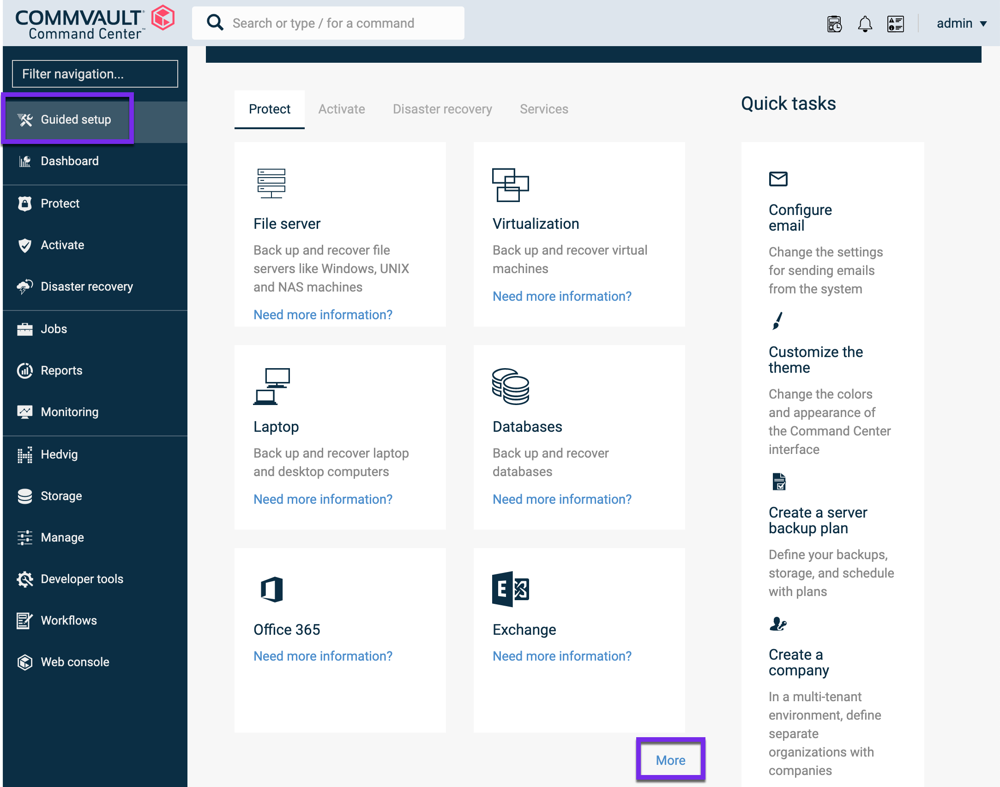
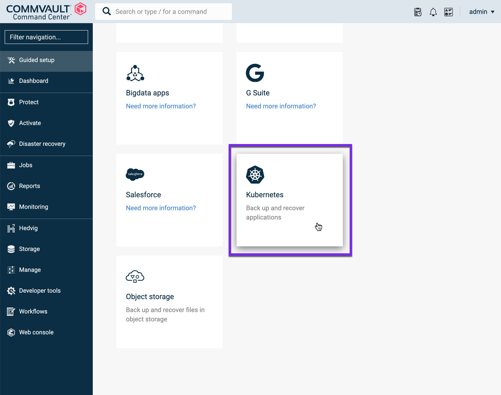
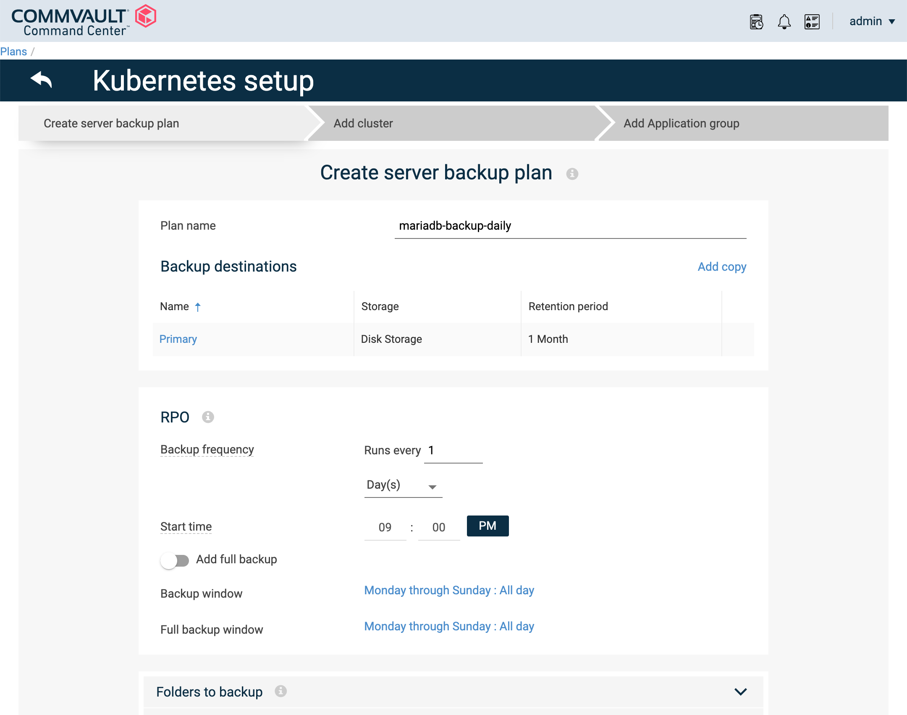
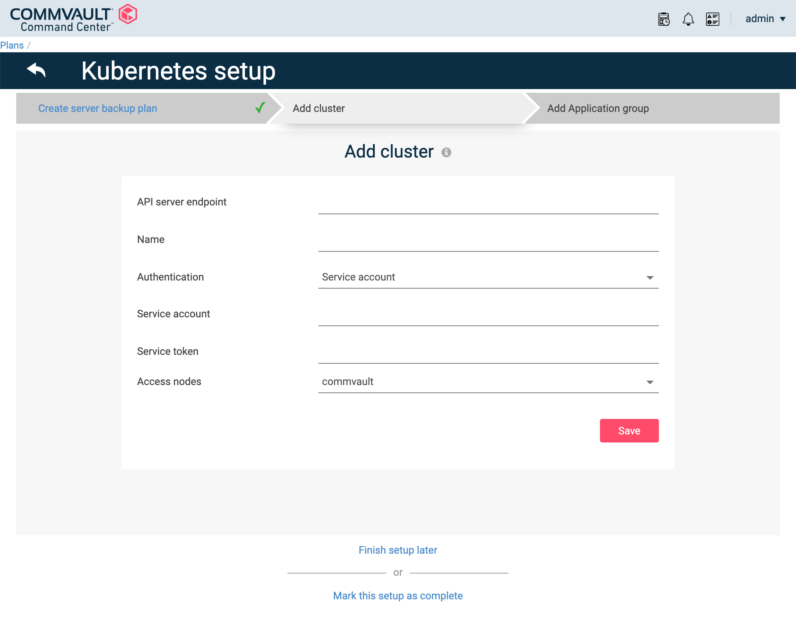
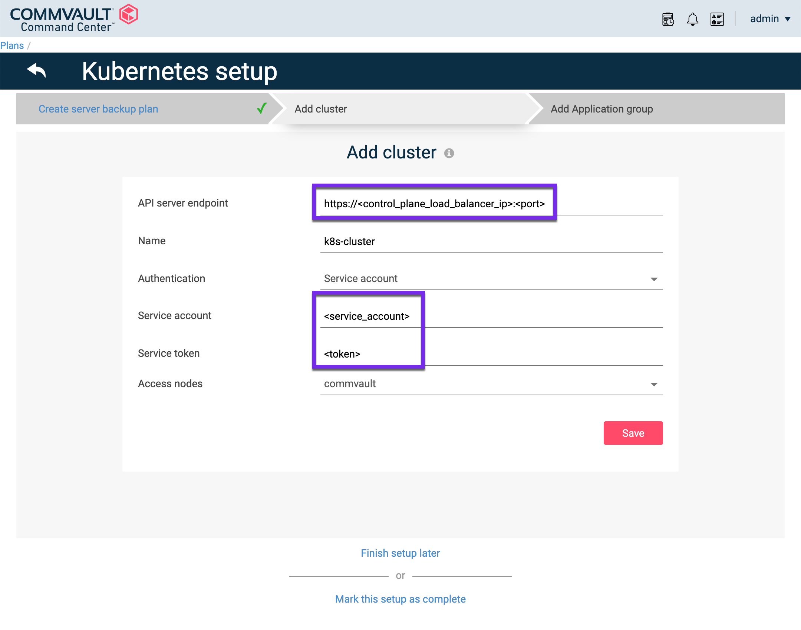
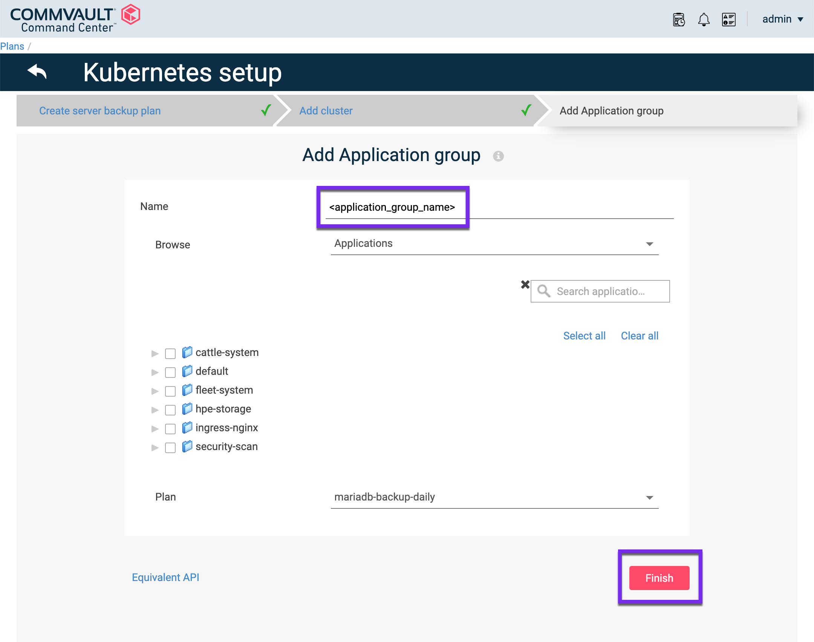

Overview¶
The Commvault intelligent data management platform provides Kubernetes-native protection, application mobility, and disaster recovery for containerized applications. Combined with Commvault Command Center™, Commvault provides enterprise IT operations and DevOps teams an easy-to-use, self-service dashboard for managing the protection of Kubernetes.
HPE and Commvault have been delivering end-to-end solutions for many years. Learn more about HPE and Commvaults partnership here: https://www.commvault.com/supported-technologies/hpe.
Pre-requisites¶
The HPE CSI Driver has been validated on Commvault Complete Backup and Recovery version 11.21 and later.
Permissions¶
This guide assumes you have administrative access to Commvault Command Center and access to a Kubernetes cluster with kubectl and a KUBECONFIG file configured with a cluster administrator account. This will be used to create a Kubernetes service account for Commvault Complete Backup and Recovery, with the default-sa-crb cluster role binding. Please refer to the Creating a Service Account for Kubernetes Authentication.
Cluster requirements¶
The cluster needs to be running Kubernetes 1.17 or later and have the CSI snapshot CustomResourceDefinitions (CRDs) and the CSI external snapshotter deployed. Follow the guides available on SCOD to:
Note
The rest of this guide assumes the default VolumeSnapshotClass and VolumeSnapshots are functional within the cluster with a compatible Kubernetes snapshot API level between the CSI driver and Commvault.
Getting Started¶
This guide will walk through the steps to configure Commvault to perform data protection operations within a Kubernetes cluster. To learn more, refer to the official Commvault documentation.
- Complete the Core Setup Wizard
- Review Supported Configurations for Kubernetes
Configuring Commvault with Kubernetes¶
If the setup page is not displayed, from the navigation pane, click Guided setup.

After you complete the core setup, on the Protect tab, click the Kubernetes tile.

On the Create server backup plan page, enter in a Plan name, then choose Storage, Retention period, and RPO schedule. For more information, see Creating a Server Plan.
Note
If you configured a server backup plan as part of the Core Setup, the wizard skips this page.

Click Save.
The Add cluster page appears.

In the API server endpoint box, enter the API server endpoint URL. This can be found using kubectl config view under server: https://<control_plane_load_balancer_ip>:<port>.

Select Authentication method (Service account, Kubeconfig file, or Username and Password).
Create a Service Account¶
In this example, we will cover how to create a Kubernetes service account within the cluster to be used by Commvault for backup and restore operations.
The official guide is available here: Creating a Service Account for Kubernetes Authentication
- Create a Kubernetes service account (for example, cvbackup).
kubectl create serviceaccount cvbackup
- To ensure that the service account has sufficient privileges to perform data protection operations, add the service account to the
default-sa-crbcluster role binding.
kubectl create clusterrolebinding default-sa-crb --clusterrole=cluster-admin --serviceaccount=default:cvbackup
- Extract the service account token required to configure your Kubernetes cluster for data protection.
kubectl get secrets -o jsonpath="{.items[?(@.metadata.annotations['kubernetes\.io/service-account\.name']=='cvbackup')].data.token}"|base64 --decode
- Use the Kubernetes service account cvbackup, and the token for authentication to your Kubernetes cluster by pasting them into the appropriate fields.
Click Save.
Next choose the Application group, Labels or Volumes you want to backup.

Click Finish.
Backup and Restores¶
To perform snapshot and restore operations through Commvault using the HPE CSI Driver for Kubernetes, please refer to the Commvault documentation.
Note
Above links are external to documentation.commvault.com.